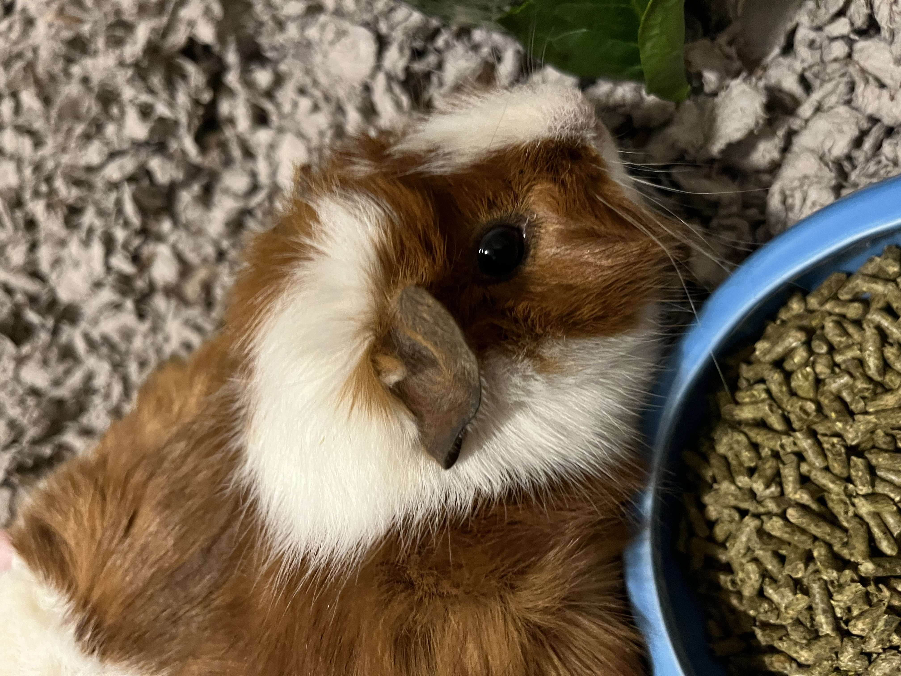
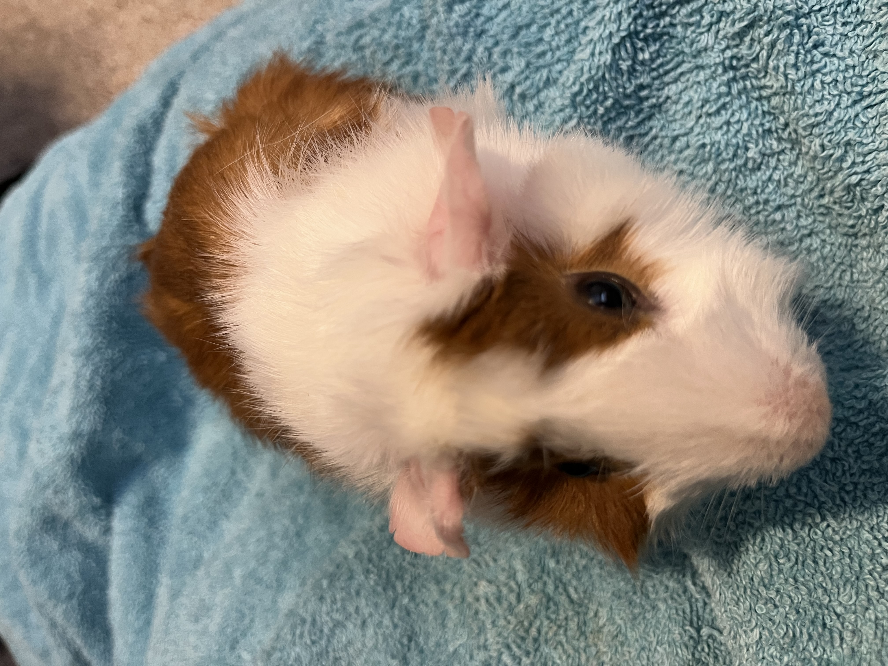

Turbo and Whiskey
Turbo is a very chill girl. She enjoys eating lots of hay and sitting in a prime "baked potato" position. Her favorite food is cucumbers and she loves to crawl into my hood or up my sleeve to be close to me.
Whiskey is a very extroverted piggy who loves to run around the cage and kick bedding everywhere. She has a corner that she loves to dig in (not sure why), and she loves to chat with us when we bring out the hay.